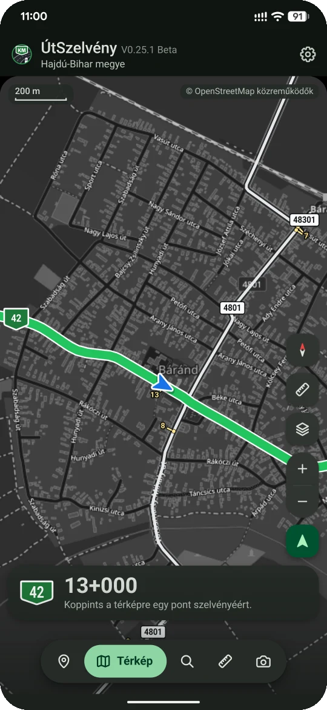
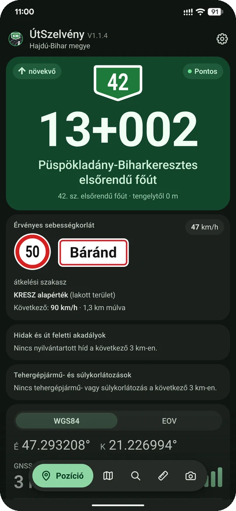
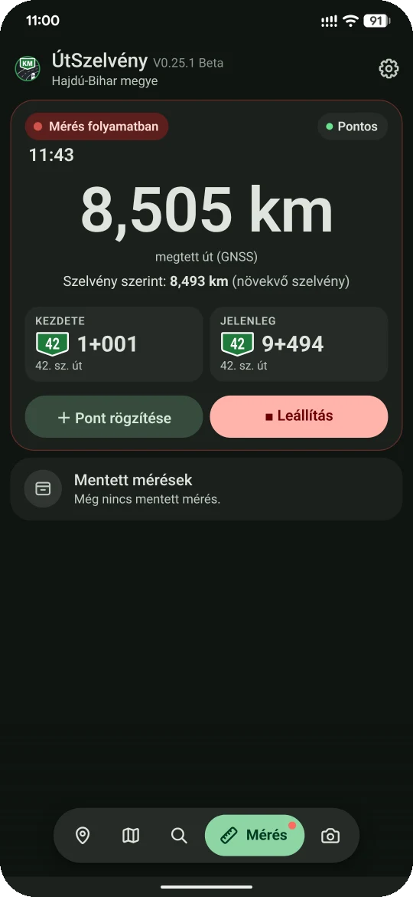
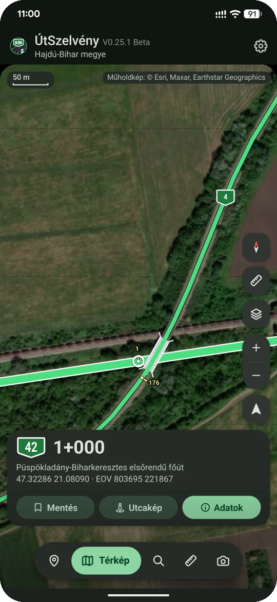
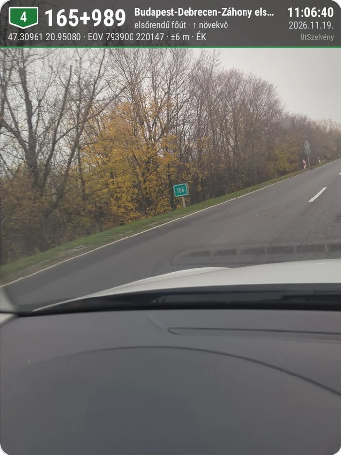

ÚtSzelvény
Kilométerkő minden méteren – a zsebedben.
Melyik országos közúton, melyik kilométerszelvényben állsz?
Az ÚtSzelvény megmutatja internet nélkül is, ingyen, reklám nélkül.
Böngészőben fut, telepítés nélkül!
Támogatott böngészők: Androidon Chrome vagy iOS-en Safari



Mit tud?
Pozíció
Útszám, szelvény, útpálya, sebességkorlát a település nevével, hidak és tehergépjármű-korlátozások a következő 3 km-en.
Térkép
Az országos közúthálózat útszámokkal. Koppintásra a pont szelvénye és a szakasz adatai: sávok, burkolat, forgalom.
Keresés
Pont vagy szakasz útszám és szelvény alapján, vagy koordinátából a legközelebbi szelvény.
Mérés
Szelvénytől szelvényig GPS-szel vagy a térképen, akár több úton át. Elnevezhető, CSV-be menthető.
Fotó
Útszám, szelvény, dátum és idő a kép tetején. Jelzi a belterületeket is.
HUD mód
A műszerfalra tett telefon tükrözött képe a szélvédőn, így egy pillanatra sem kell lepillantanod az útról.
Három lépés
Nyisd meg
Androidon Chrome-ban, iPhone-on Safariban. Az első betöltés után internet nélkül is működik.
Engedélyezd a helyadatot
A pozíció csak a telefonodon marad – az alkalmazás nem gyűjt és nem küld adatot.
Tedd ki a kezdőképernyőre
A böngésző menüjében „Hozzáadás a kezdőképernyőhöz” – így egy koppintással indul, mint egy alkalmazás.


Ingyenes és nyílt forráskódú
GPL-3.0 licenc · Nincs fiók, reklám vagy analitika. Ha hasznosnak találod, egy kávé árával támogathatod a fejlesztést.
Androidra alkalmazásként is telepíthető: Android alkalmazás (APK) letöltése